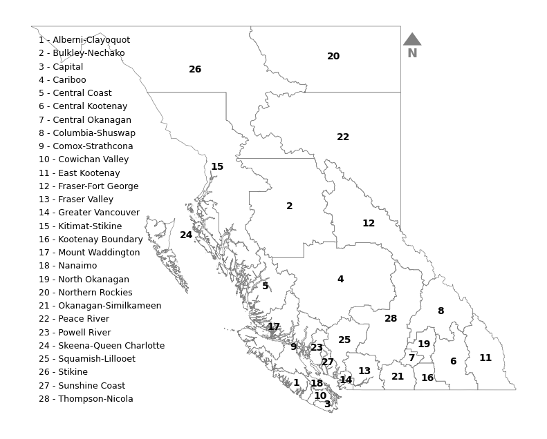
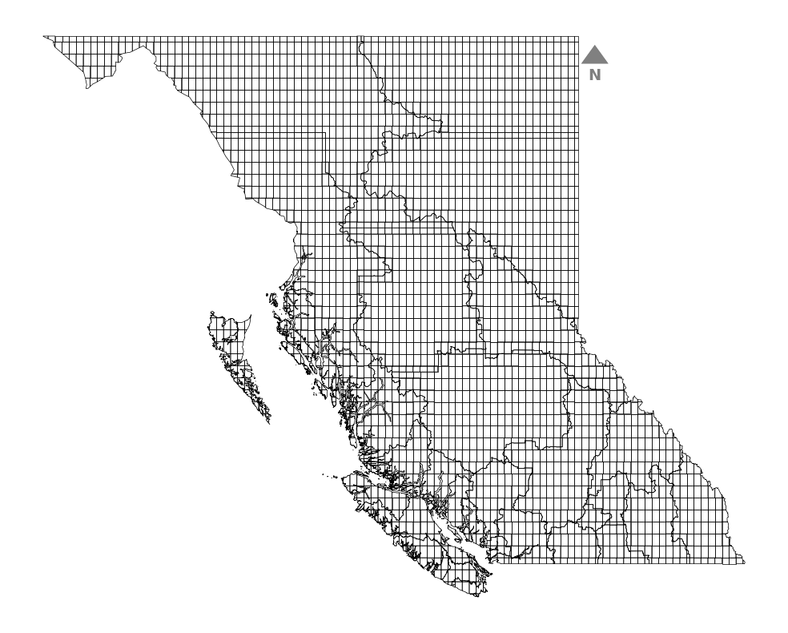
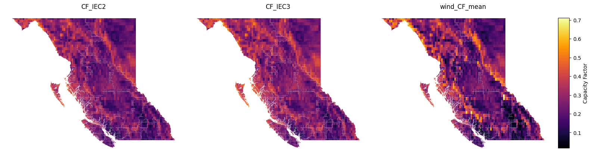
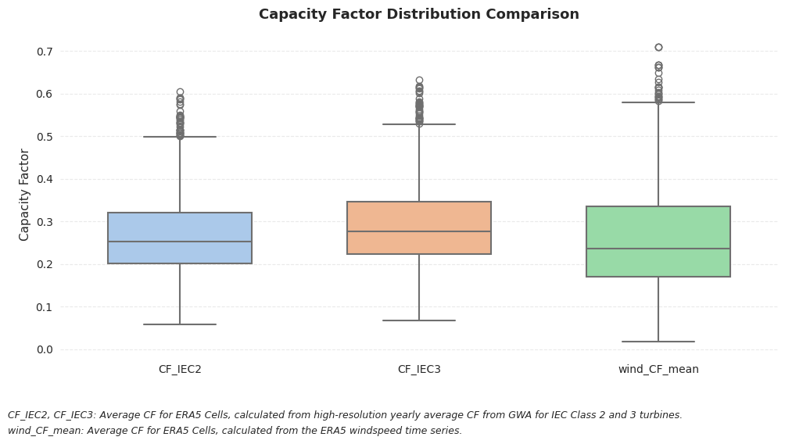
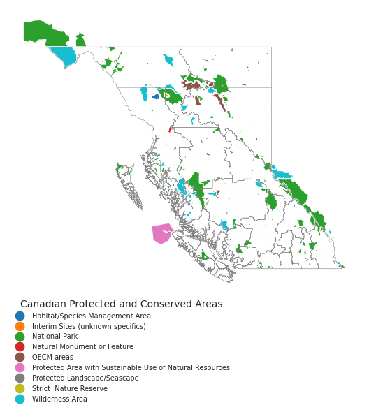
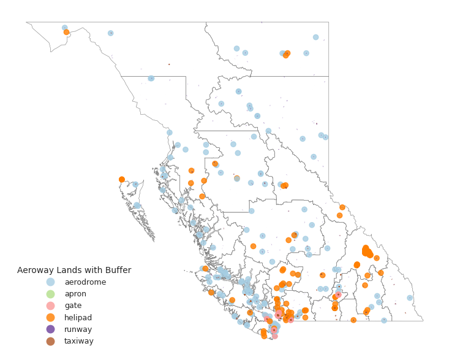
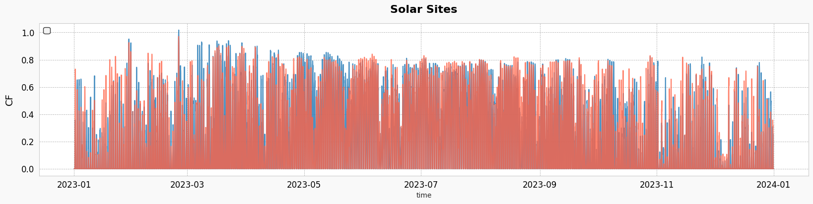
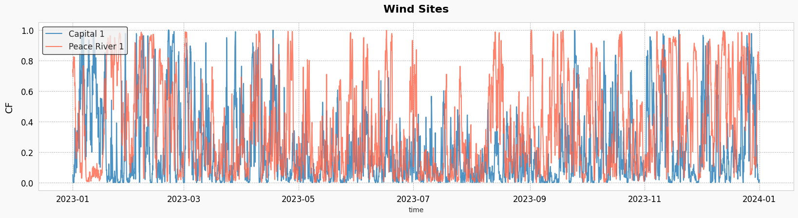

load packages
[1]:
from RES.hdf5_handler import DataHandler
import RES.visuals as vis
import pandas as pd
import geopandas as gpd
import warnings
# Suppress specific warnings
warnings.filterwarnings("ignore", category=UserWarning)
Define Province Code¶
[2]:
province_code:str='BC' # The tool is designed to work for any province of CANADA.
store=f"../data/store/resources_{province_code}.h5"
res_data=DataHandler(store,
show_structure=True) # the DataHandler object could be initiated without the store definition as well.
____________________________________________________________
Structure of HDF5 file: ../data/store/resources_BC.h5
____________________________________________________________
[key] boundary
[key] cells
[key] clusters
└─ [key] clusters/solar
└─ [key] clusters/wind
[key] cost
└─ [key] cost/atb
└─ └─ [key] cost/atb/bess
└─ └─ [key] cost/atb/solar
└─ └─ [key] cost/atb/wind
[key] dissolved_indices
└─ [key] dissolved_indices/solar
└─ [key] dissolved_indices/wind
[key] substations
[key] timeseries
└─ [key] timeseries/clusters
└─ └─ [key] timeseries/clusters/solar
└─ └─ [key] timeseries/clusters/wind
└─ [key] timeseries/solar
└─ [key] timeseries/wind
[key] units
└> To access the data :
└> <datahandler instance>.from_store('<key>')
Load Data from Store¶
[3]:
# Loading Geodataframes
cells=res_data.from_store('cells')
boundary=res_data.from_store('boundary')
timeseries_clusters_solar=res_data.from_store('timeseries/clusters/solar')
timeseries_clusters_wind=res_data.from_store('timeseries/clusters/wind')
clusters_solar=res_data.from_store('clusters/solar')
clusters_wind=res_data.from_store('clusters/wind')
Create Visuals¶
[4]:
import matplotlib.pyplot as plt
[7]:
region_mapping=pd.read_csv('../data/region_mapping.csv')
[8]:
# Merge region names into boundary using region_mapping
boundary = boundary.merge(region_mapping, left_on='Region', right_on='Region', how='left')
# boundary
[9]:
import matplotlib.pyplot as plt
import matplotlib.patches as mpatches
import matplotlib.patheffects as path_effects
# Plot region boundaries
fig, ax = plt.subplots(figsize=(10, 8))
boundary.plot(ax=ax, linewidth=0.5, alpha=1, facecolor='none', edgecolor='gray')
vis.add_compass_to_plot(ax,size=13)
ax.set_axis_off()
# Annotate region numbers at centroids
for idx, row in boundary.iterrows():
if row.geometry is not None and not row.geometry.is_empty:
x, y = row.geometry.centroid.x, row.geometry.centroid.y
ax.text(x, y, str(row['Region_Number']), color='black', fontsize=10, ha='center', va='center', weight='bold')
# Create legend for region number to name
handles = [
mpatches.Patch(color='white', label=f"{num} - {name}")
for num, name in zip(region_mapping['Region_Number'], region_mapping['Region'])
]
ax.legend(handles=handles, bbox_to_anchor=(0.0, 0.95), loc='upper left', fontsize=9, frameon=False)
fig.patch.set_alpha(0) # Make figure background transparent
ax.set_facecolor('none') # Make axis background transparent

[10]:
fig, ax = plt.subplots(figsize=(10, 8), facecolor='none')
cells.boundary.plot(ax=ax, linewidth=0.5, color='k', alpha=1)
vis.add_compass_to_plot(ax)
ax.set_axis_off()
fig.patch.set_alpha(0) # Make figure background transparent
ax.set_facecolor('none') # Make axis background transparent
plt.tight_layout()
plt.show()

[11]:
import matplotlib.pyplot as plt
import numpy as np
# Example data setup (replace with your actual data)
# Assuming 'cells' is a GeoDataFrame with columns 'CF_IEC2', 'CF_IEC3', 'wind_CF_mean'
# and a geometry column for plotting.
# Determine the common color scale across all columns
vmin = min(cells[['CF_IEC2', 'CF_IEC3', 'wind_CF_mean']].min())
vmax = max(cells[['CF_IEC2', 'CF_IEC3', 'wind_CF_mean']].max())
# Create subplots
fig, axes = plt.subplots(nrows=1, ncols=3, figsize=(15, 5))
# List of columns to plot
columns_to_plot = ['CF_IEC2', 'CF_IEC3', 'wind_CF_mean']
# Plot each column
for ax, column in zip(axes, columns_to_plot):
im = cells.plot(column=column, ax=ax, legend=False, edgecolor=None, linewidth=0.1,
cmap='inferno', vmin=vmin, vmax=vmax)
ax.set_title(column)
ax.axis('off') # Hide axis for cleaner look
# Add a single colorbar
fig.subplots_adjust(right=0.9) # Adjust space to accommodate colorbar
cbar_ax = fig.add_axes([1, 0.15, 0.02, 0.7]) # Position for colorbar
sm = plt.cm.ScalarMappable(cmap='inferno', norm=plt.Normalize(vmin=vmin, vmax=vmax))
sm._A = [] # Dummy array for the scalar mappable
fig.colorbar(sm, cax=cbar_ax, label='Capacity Factor')
plt.tight_layout()
plt.savefig('wind_CF_comparison_mean.png', dpi=600)
plt.show()

[12]:
gwa_cols = ['CF_IEC2', 'CF_IEC3', 'wind_CF_mean']
print(cells[gwa_cols].isnull().sum())
print(cells[gwa_cols].describe())
CF_IEC2 0
CF_IEC3 0
wind_CF_mean 0
dtype: int64
CF_IEC2 CF_IEC3 wind_CF_mean
count 2948.000000 2948.000000 2948.000000
mean 0.264993 0.288536 0.257799
std 0.088376 0.091395 0.120576
min 0.058166 0.067028 0.017064
25% 0.201172 0.223268 0.169982
50% 0.252328 0.276761 0.235354
75% 0.320664 0.345851 0.334583
max 0.605919 0.631846 0.710568
[13]:
# import numpy as np
# # Calculate the mean of the high-resolution CF data (CF_IEC2, CF_IEC3)
# mean_cf_iec = cells[['CF_IEC2', 'CF_IEC3']].mean(axis=1)
# # Calculate the mean of the low-resolution wind CF data (wind_CF_mean)
# mean_wind_cf = cells['wind_CF_mean']
# # Compute the scaling factor: mean of high-res CF values divided by the low-res CF value
# # You could also use a weighted mean or median if desired.
# scaling_factor = mean_cf_iec / mean_wind_cf
# # Apply the scaling factor to rescale wind_CF_mean
# cells['adjusted_wind_CF_mean'] = cells['wind_CF_mean'] * scaling_factor
# # Check the rescaled values
# print(cells[['wind_CF_mean', 'adjusted_wind_CF_mean']].describe())
[14]:
# # Z-score normalization for wind_CF_mean, CF_IEC2, and CF_IEC3
# cells['wind_CF_mean_zscore'] = (cells['wind_CF_mean'] - cells['wind_CF_mean'].mean()) / cells['wind_CF_mean'].std()
# cells['CF_IEC2_zscore'] = (cells['CF_IEC2'] - cells['CF_IEC2'].mean()) / cells['CF_IEC2'].std()
# cells['CF_IEC3_zscore'] = (cells['CF_IEC3'] - cells['CF_IEC3'].mean()) / cells['CF_IEC3'].std()
# # Rescale wind_CF_mean by averaging the Z-scores
# cells['rescaled_wind_CF_mean_zscore'] = (cells['CF_IEC2_zscore'] + cells['CF_IEC3_zscore']) / 2
# # Reverse the Z-score scaling
# cells['rescaled_wind_CF_mean_zscore'] = cells['rescaled_wind_CF_mean_zscore'] * cells['wind_CF_mean'].std() + cells['wind_CF_mean'].mean()
# # Check the results
# print(cells[['wind_CF_mean', 'rescaled_wind_CF_mean_zscore']].describe())
[15]:
import seaborn as sns
import matplotlib.pyplot as plt
from textwrap import fill
# Set a clean and minimal style
sns.set_style("white")
# Initialize the figure
plt.figure(figsize=(10, 5))
# Create the boxplot
ax = sns.boxplot(
data=cells[['CF_IEC2', 'CF_IEC3', 'wind_CF_mean']],
palette="pastel",
linewidth=1.5,
width=0.6
)
# Set title and labels
ax.set_title('Capacity Factor Distribution Comparison', fontsize=13, weight='semibold', pad=12)
ax.set_ylabel('Capacity Factor', fontsize=11)
ax.set_xlabel('')
# Tweak tick formatting
ax.tick_params(axis='x', labelsize=10)
ax.tick_params(axis='y', labelsize=10)
# Remove all spines
for spine in ax.spines.values():
spine.set_visible(False)
# Add horizontal grid lines
ax.yaxis.grid(True, linestyle='--', alpha=0.4)
ax.xaxis.grid(False)
# Add footnotes below the plot
plt.figtext(
0, -0.08,
fill('CF_IEC2, CF_IEC3: Average CF for ERA5 Cells, calculated from high-resolution yearly average CF from GWA for IEC Class 2 and 3 turbines.', width=140),
horizontalalignment='left', fontsize=9, style='italic'
)
plt.figtext(
0, -0.12,
fill('wind_CF_mean: Average CF for ERA5 Cells, calculated from the ERA5 windspeed time series.', width=100),
horizontalalignment='left', fontsize=9, style='italic'
)
plt.tight_layout()
plt.show()

[16]:
clusters_wind_f=clusters_wind[clusters_wind['potential_capacity']>0]
clusters_solar_f=clusters_solar[clusters_solar['potential_capacity']>0]
[17]:
print(f'Total sites {len(clusters_wind_f)}')
total_capacity=clusters_wind_f.potential_capacity.sum()
print(f'Total Capacity {int(total_capacity/1E3)} GW')
sites=5
top_sites_capacity=clusters_wind_f.head(sites).potential_capacity.sum()
print(f'Top {sites} sites ({round(sites/len(clusters_wind_f)*100)}% site) capacity {int(top_sites_capacity/1E3)} GW ({round(top_sites_capacity/total_capacity*100)}% of total capacity)')
Total sites 56
Total Capacity 663 GW
Top 5 sites (9% site) capacity 136 GW (21% of total capacity)
[18]:
print(f'Total sites {len(clusters_solar_f)}')
total_capacity=clusters_solar_f.potential_capacity.sum()
print(f'Total Capacity {int(total_capacity/1E3)} GW')
sites=5
top_sites_capacity=clusters_solar_f.head(sites).potential_capacity.sum()
print(f'Top {sites} sites ({round(sites/len(clusters_solar_f)*100)}% site) capacity {int(top_sites_capacity/1E3)} GW ({round(top_sites_capacity/total_capacity*100)}% of total capacity)')
Total sites 82
Total Capacity 517 GW
Top 5 sites (6% site) capacity 19 GW (4% of total capacity)
Static Plots¶
[19]:
cpcad=pd.read_pickle(f'../data/downloaded_data/lands/ProtectedConservedArea_{province_code}.pickle')
[20]:
import matplotlib.pyplot as plt
# Shadow effect offset
shadow_offset = 0.008
fig, ax = plt.subplots(figsize=(14,6))
# Plot the cpcad_BC data
cpcad.plot('IUCN_CAT_desc', ax=ax)
cpcad.geometry = cpcad.geometry.translate(xoff=-shadow_offset, yoff=shadow_offset)
cpcad.plot('IUCN_CAT_desc', legend=True,
legend_kwds={'title': "Canadian Protected and Conserved Areas",
'loc': 'upper left',
'bbox_to_anchor': (0, 0.01),
'frameon': False,
'prop': {'size': 7}}, # Adjust font size (smaller values make it more compact)
ax=ax)
# Plot solar map on ax1
# Add shadow effect
boundary.plot(ax=ax, facecolor='none', edgecolor='gray', linewidth=0.3, alpha=1) # Shadow layer
boundary.geometry = boundary.geometry.translate(xoff=shadow_offset, yoff=-shadow_offset)
boundary.plot(ax=ax, facecolor='none', edgecolor='gray', linewidth=0.2, alpha=0.9) # Shadow layer
# Turn off the axis grid
ax.grid(False)
ax.axis('off')
plt.tight_layout()
plt.savefig(f'../vis/misc/CPCAD_{province_code}.png', dpi=300)

[21]:
aeroway=gpd.read_file(f'../data/downloaded_data/OSM/{province_code}_aeroway.geojson')
/localhome/mei3/miniconda3/envs/RES/lib/python3.12/site-packages/pyogrio/raw.py:196: RuntimeWarning: Several features with id = 1374701 have been found. Altering it to be unique. This warning will not be emitted anymore for this layer
return ogr_read(
[ ]:
import matplotlib.pyplot as plt
# Shadow effect offset
shadow_offset = 0.008
fig, ax = plt.subplots(figsize=(12,6))
# Plot boundary with shadow effect
boundary.plot(ax=ax, facecolor='none', edgecolor='gray', linewidth=0.3, alpha=1) # Shadow layer
boundary.geometry = boundary.geometry.translate(xoff=shadow_offset, yoff=-shadow_offset)
boundary.plot(ax=ax, facecolor='none', edgecolor='gray', linewidth=0.2, alpha=0.9) # Shadow layer
# Plot the aeroway data with more vibrant colors
aeroway.geometry = aeroway.geometry.translate(xoff=-shadow_offset, yoff=shadow_offset)
aeroway.plot('aeroway', legend=True,
legend_kwds={'title': "Aeroway Lands with Buffer",
'loc': 'lower left',
'bbox_to_anchor': (.01, 0.01),
'frameon': False,
'prop': {'size': 9}}, # Adjust font size (smaller values make it more compact)
ax=ax,
alpha=0.8,
cmap='Paired') # Use a vibrant colormap
# Turn off the axis grid
ax.grid(False)
ax.axis('off')
plt.tight_layout()
plt.savefig(f'../vis/misc/Aeroway_{province_code}.png', dpi=300)

[23]:
timeseries_clusters_solar.iloc[:, 0]
[23]:
time
2023-01-01 00:00:00 0.0
2023-01-01 01:00:00 0.0
2023-01-01 02:00:00 0.0
2023-01-01 03:00:00 0.0
2023-01-01 04:00:00 0.0
...
2023-12-31 19:00:00 0.0
2023-12-31 20:00:00 0.0
2023-12-31 21:00:00 0.0
2023-12-31 22:00:00 0.0
2023-12-31 23:00:00 0.0
Name: EastKootenay_1, Length: 8760, dtype: float64
[24]:
import matplotlib.pyplot as plt
import seaborn as sns
# Set Seaborn style for better aesthetics
sns.set_style("whitegrid")
# Create figure
fig, ax = plt.subplots(figsize=(20, 4), facecolor="#f9f9f9") # Light background
# Define custom colors
colors = ['#1f77b4', '#ff6347']
# Plot using Seaborn
sns.lineplot(data=timeseries_clusters_solar, x=timeseries_clusters_solar.index, y=timeseries_clusters_solar.iloc[:, 0], ax=ax, color=colors[0], linewidth=1.5, alpha=0.8, )
sns.lineplot(data=timeseries_clusters_solar, x=timeseries_clusters_solar.index, y=timeseries_clusters_solar.iloc[:, 1], ax=ax, color=colors[1], linewidth=1.5, alpha=0.8,)
# Enhance aesthetics
ax.set_facecolor("#ffffff") # Pure white plot area
ax.grid(True, linestyle="--", linewidth=0.6, alpha=0.6, color="gray")
# Labels & title
ax.set_title("Solar Sites", fontsize=16, color="black", fontweight="bold", pad=15)
# ax.set_xlabel("Time", fontsize=14, color="black", labelpad=10)
ax.set_ylabel("CF", fontsize=14, color="black", labelpad=10)
# Customize ticks
ax.tick_params(axis='x', colors="black", labelsize=12)
ax.tick_params(axis='y', colors="black", labelsize=12)
# Add a legend
ax.legend(facecolor="#f0f0f0", edgecolor="black", fontsize=12, loc="upper left", frameon=True)
# Show plot
plt.show()

[25]:
import matplotlib.pyplot as plt
import seaborn as sns
# Set Seaborn style for better aesthetics
sns.set_style("whitegrid")
# Create figure
fig, ax = plt.subplots(figsize=(20, 4.5), facecolor="#f9f9f9") # Light background
# Define custom colors
colors = ['#1f77b4', '#ff6347']
# Plot using Seaborn
sns.lineplot(data=timeseries_clusters_wind, x=timeseries_clusters_wind.index, y='Capital_1', ax=ax, color=colors[0], linewidth=1.5, alpha=0.8, label="Capital 1")
sns.lineplot(data=timeseries_clusters_wind, x=timeseries_clusters_wind.index, y='PeaceRiver_1', ax=ax, color=colors[1], linewidth=1.5, alpha=0.8, label="Peace River 1")
# Enhance aesthetics
ax.set_facecolor("#ffffff") # Pure white plot area
ax.grid(True, linestyle="--", linewidth=0.6, alpha=0.6, color="gray")
# Labels & title
ax.set_title("Wind Sites", fontsize=16, color="black", fontweight="bold", pad=15)
# ax.set_xlabel("Time", fontsize=14, color="black", labelpad=10)
ax.set_ylabel("CF", fontsize=14, color="black", labelpad=10)
# Customize ticks
ax.tick_params(axis='x', colors="black", labelsize=12)
ax.tick_params(axis='y', colors="black", labelsize=12)
# Add a legend
ax.legend(facecolor="#f0f0f0", edgecolor="black", fontsize=12, loc="upper left", frameon=True)
# Show plot
plt.show()

Static Data Visuals in Interactive Maps¶
[26]:
"""
import hvplot.pandas
import holoviews as hv
from holoviews import opts
from bokeh.layouts import gridplot
from bokeh.io import show
# Initialize Holoviews extension
hv.extension('bokeh')
# Define a dictionary to map columns to specific colormaps
cmap_mapping = {
'lcoe_wind': 'cool',
'potential_capacity_wind': 'Blues',
'lcoe_solar': 'autumn',
'CF_IEC2': 'RdYlGn',
'wind_CF_mean': 'RdYlGn',
'windspeed_ERA5': 'winter',
'nearest_station_distance_km': 'Oranges',
'potential_capacity_wind': 'Blues',
'potential_capacity_solar': 'Oranges',
}
# Define a function to create individual plots
def create_plot(column_name, cmap):
return cells.hvplot(
color=column_name,
cmap=cmap,
geo=True,
tiles='CartoDark', # Default base map
frame_width=300, # Adjust the size of the plots
frame_height=300, # Adjust the size of the plots
data_aspect=.5,
alpha=0.8,
line_color='None',
line_width=0.1,
hover_line_color='red'
).opts(title=column_name,
show_grid=True,
show_legend=True,
tools=['hover', 'pan', 'wheel_zoom','reset','box_select'],
legend_position='top_right'
)
# Create a list of plots for each column
plots = [create_plot(col, cmap) for col, cmap in cmap_mapping.items()]
# Create a grid layout for the plots
grid = hv.Layout(plots).cols(3) # Adjust the number of columns as needed
# Show the layout
hv.save(grid, '../docs/grid_plots.html') # Save the grid layout as an HTML file
# Render the layout as a Bokeh object
bokeh_layout = hv.render(grid, backend='bokeh')
# Show the layout
show(bokeh_layout)
"""
[26]:
"\nimport hvplot.pandas\nimport holoviews as hv\nfrom holoviews import opts\nfrom bokeh.layouts import gridplot\nfrom bokeh.io import show\n\n# Initialize Holoviews extension\nhv.extension('bokeh')\n\n\n# Define a dictionary to map columns to specific colormaps\ncmap_mapping = {\n 'lcoe_wind': 'cool',\n 'potential_capacity_wind': 'Blues',\n 'lcoe_solar': 'autumn',\n 'CF_IEC2': 'RdYlGn',\n 'wind_CF_mean': 'RdYlGn',\n 'windspeed_ERA5': 'winter',\n 'nearest_station_distance_km': 'Oranges',\n 'potential_capacity_wind': 'Blues',\n 'potential_capacity_solar': 'Oranges',\n}\n\n# Define a function to create individual plots\ndef create_plot(column_name, cmap):\n return cells.hvplot(\n color=column_name,\n cmap=cmap,\n geo=True,\n tiles='CartoDark', # Default base map\n frame_width=300, # Adjust the size of the plots\n frame_height=300, # Adjust the size of the plots\n data_aspect=.5,\n alpha=0.8,\n line_color='None',\n line_width=0.1,\n hover_line_color='red'\n ).opts(title=column_name,\n show_grid=True,\n show_legend=True,\n tools=['hover', 'pan', 'wheel_zoom','reset','box_select'],\n legend_position='top_right'\n )\n\n# Create a list of plots for each column\nplots = [create_plot(col, cmap) for col, cmap in cmap_mapping.items()]\n\n# Create a grid layout for the plots\ngrid = hv.Layout(plots).cols(3) # Adjust the number of columns as needed\n\n# Show the layout\nhv.save(grid, '../docs/grid_plots.html') # Save the grid layout as an HTML file\n\n\n\n# Render the layout as a Bokeh object\nbokeh_layout = hv.render(grid, backend='bokeh')\n\n# Show the layout\nshow(bokeh_layout)\n"
Timeseries Plots¶
[27]:
# import pandas as pd
# import hvplot.pandas
# import panel as pn
# import random
# # Initialize Panel with the dark theme
# pn.extension(theme='default')
# # Load your DataFrames
# df_solar = timeseries_clusters_solar # Your solar DataFrame
# df_wind = timeseries_clusters_wind # Your wind DataFrame
# # Create a list of the column names for the dropdowns
# solar_options = df_solar.columns.tolist()
# wind_options = df_wind.columns.tolist()
# # Function to generate a random vibrant color
# def get_random_vibrant_color():
# return "#{:02x}{:02x}{:02x}".format(random.randint(150, 255), random.randint(150, 255), random.randint(150, 255))
# # Create a function to update the solar plot based on the selected time series
# def update_solar_plot(selected_series):
# return df_solar[selected_series].hvplot.line(
# title=f"Time Series - Solar: {selected_series}",
# xlabel="DateTime",
# ylabel="Value",
# legend='top_left',
# width=1000, # Width of the plot
# height=200, # Height of the plot
# tools=['hover'], # Enable hover tool
# line_color=get_random_vibrant_color() # Random vibrant color for the solar plot
# )
# # Create a function to update the wind plot based on the selected time series
# def update_wind_plot(selected_series):
# return df_wind[selected_series].hvplot.line(
# title=f"Time Series - Wind: {selected_series}",
# xlabel="DateTime",
# ylabel="Value",
# legend='top_left',
# width=1000, # Width of the plot
# height=200, # Height of the plot
# tools=['hover'], # Enable hover tool
# line_color=get_random_vibrant_color() # Random vibrant color for the wind plot
# )
# # Create dropdown widgets for selecting the time series
# solar_dropdown = pn.widgets.Select(name='Select Solar Time Series', options=solar_options)
# wind_dropdown = pn.widgets.Select(name='Select Wind Time Series', options=wind_options)
# # Create dynamic panels that update the plot based on the dropdown selections
# dynamic_solar_plot = pn.bind(update_solar_plot, selected_series=solar_dropdown)
# dynamic_wind_plot = pn.bind(update_wind_plot, selected_series=wind_dropdown)
# # Create a layout with the dropdowns and the plots in a two-row grid
# grid_layout = pn.Column(
# solar_dropdown, dynamic_solar_plot, # Solar plot in the first row
# wind_dropdown, dynamic_wind_plot # Wind plot in the second row
# )
# # Save the grid layout as an HTML file
# grid_layout.save('../docs/time_series_plots.html')
# # Display the panel in a notebook or in a web application
# grid_layout.show()
[28]:
clusters_solar.loc['CowichanValley_1']
[28]:
geometry MULTIPOLYGON (((-123.6283 48.547, -123.635 48....
lcoe 53.758626
capex 1.366598
fom 0.0
vom 0.0238
CF_mean 0.194672
Cluster_No 1
potential_capacity 1370.339083
Region CowichanValley
nearest_station BC_KSH_DSS
nearest_station_distance_km 4.443855
Rank 42
Operational_life 20
resource_type solar
Name: CowichanValley_1, dtype: object
[29]:
# import pandas as pd
# import hvplot.pandas
# import panel as pn
# import random
# # Initialize Panel with the dark theme
# pn.extension(theme='default')
# # Load your DataFrames
# df_solar = timeseries_clusters_solar # Your solar DataFrame
# df_wind = timeseries_clusters_wind # Your wind DataFrame
# clusters_solar = clusters_solar # Your clusters_solar DataFrame
# # Create a list of the column names for the dropdowns
# solar_options = df_solar.columns.tolist()
# wind_options = df_wind.columns.tolist()
# # Function to generate a random vibrant color
# def get_random_vibrant_color():
# return "#{:02x}{:02x}{:02x}".format(random.randint(150, 255), random.randint(150, 255), random.randint(150, 255))
# # Create a function to update the solar plot based on the selected time series
# def update_solar_plot(selected_series):
# return df_solar[selected_series].hvplot.line(
# title=f"Time Series - Solar: {selected_series}",
# xlabel="DateTime",
# ylabel="Value",
# legend='top_left',
# width=1000, # Width of the plot
# height=300, # Increased height for better visibility
# tools=['hover'], # Enable hover tool
# line_color=get_random_vibrant_color(), # Random vibrant color for the solar plot
# line_width=2, # Make line thicker for better visibility
# fontsize={'title': 16, 'xlabel': 14, 'ylabel': 14, 'legend': 12}, # Adjust font sizes
# )
# # Create a function to update the wind plot based on the selected time series
# def update_wind_plot(selected_series):
# return df_wind[selected_series].hvplot.line(
# title=f"Time Series - Wind: {selected_series}",
# xlabel="DateTime",
# ylabel="Value",
# legend='top_left',
# width=1000, # Width of the plot
# height=300, # Increased height for better visibility
# tools=['hover'], # Enable hover tool
# line_color=get_random_vibrant_color(), # Random vibrant color for the wind plot
# line_width=2, # Make line thicker for better visibility
# fontsize={'title': 16, 'xlabel': 14, 'ylabel': 14, 'legend': 12}, # Adjust font sizes
# )
# # Create dropdown widgets for selecting the time series
# solar_dropdown = pn.widgets.Select(name='Select Solar Time Series', options=solar_options, width=300)
# wind_dropdown = pn.widgets.Select(name='Select Wind Time Series', options=wind_options, width=300)
# # Create dynamic panels that update the plot based on the dropdown selections
# dynamic_solar_plot = pn.bind(update_solar_plot, selected_series=solar_dropdown)
# dynamic_wind_plot = pn.bind(update_wind_plot, selected_series=wind_dropdown)
# # Function to get relevant row data from clusters_solar
# def get_cluster_info(selected_series):
# # Use the selected series name to find the relevant row in clusters_solar
# selected_row = clusters_solar.loc[selected_series]
# return selected_row
# # Create a function to update the table based on the selected time series
# def update_cluster_table(selected_series):
# cluster_info = get_cluster_info(selected_series)
# # Drop the geometry column if it exists
# if 'geometry' in cluster_info.index:
# cluster_info = cluster_info.drop('geometry')
# # Return the DataFrame widget without the geometry column
# return pn.widgets.DataFrame(cluster_info.to_frame().T, width=800, height=200)
# # Create dynamic panels for the table
# dynamic_cluster_table = pn.bind(update_cluster_table, selected_series=solar_dropdown)
# # Adjust the overall layout for better alignment and spacing
# grid_layout = pn.Column(
# pn.Row(solar_dropdown, dynamic_solar_plot, align="center"), # Center align solar dropdown and plot
# pn.Row(dynamic_cluster_table), # Show the table below the solar plot
# pn.Row(wind_dropdown, dynamic_wind_plot, align="center"), # Center align wind dropdown and plot
# sizing_mode='stretch_width', # Make layout responsive to different screen sizes
# width=1100, # Set a consistent width for the layout
# height=900 # Adjust height to give more space for plots
# )
# # Save the grid layout as an HTML file
# grid_layout.save('../docs/time_series_plots_with_table.html')
# # Display the panel in a notebook or in a web application
# grid_layout.show()